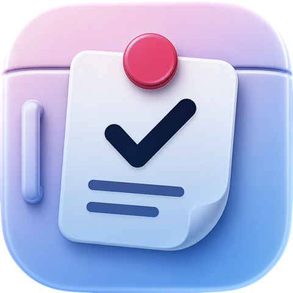

Fridgeworthy turns your family calendars into a clean, printable daily sheet for each kid. Homework, practices, chores. One tap, one page, stuck on the fridge where everyone actually looks.
When the work is visible, it feels possible.
A scattered pile of assignments, chores, and practices feels endless — especially to a kid. Fridgeworthy pulls from the calendars you already have and turns them into a simple sheet they can read, check off, and own. Grouped, printed, and sitting in front of them, the day has an end.
No new calendar to maintain. No accounts to create. Not more screen time.
Three steps, then it just runs
- Add your kids. A profile for each one, with their own color and their own sheet. Add yourself too — it works just as well for grown-up days.
- Connect what matters. Device calendars, school portal and team calendar links, plus recurring routines like "make your bed" on the days you pick.
- Print. One tap, and AirPrint sends it to your printer. Print one kid's sheet or the whole family's day at once, and the fridge is set.
What's in the box
- 🧒A sheet per kid. Unlimited profiles, free. Each kid gets their own page in their own color.
- ✅Checklists and check-offs. Kids check items off on paper or in the app, and everything stays on your phone — nothing goes to a server, because there isn't one.
- 🧺Routines. Chores and habits on a weekly schedule, no calendar events required.
- ☀️Today, Soon, Later. Each sheet shows today plus what's coming, so nothing sneaks up on you.
- 🌙Tomorrow, tonight. Flip to any day and print it — tomorrow's sheet can be on the fridge before bed.
- 🏫School calendar ready. If your school portal publishes a calendar link, it connects in about a minute.
Fridgeworthy Family
Everything above is free, for as many kids as you have. Fridgeworthy Family is a single one-time purchase — never a subscription — that adds the ambient, automatic layer:
- 📱Widgets. Each kid's day on the home screen, with check-offs and one-tap printing.
- ⏰Print reminders. A nudge at the time you choose — tap it, and the whole family's sheets are ready to print.
- 🖨️Print options. Print everyone at once, one page each or a compact quarter-fold.
- 📤Profile sharing. Send a kid's whole setup to the other parent's phone — their phone matches the calendars to its own.
One purchase covers your whole household with Apple Family Sharing. No ads, no upsells, no subscription. Ever.
Your family's data stays yours
Fridgeworthy runs entirely on your device. There's no account, no server, and no data collection. We can't see your calendars and neither can anyone else. That's not a setting. It's how the app is built.
Say hi
Questions, ideas, or a school setup that isn't working? Email me directly:
I'm a dad who built this for my own fridge. I read everything.